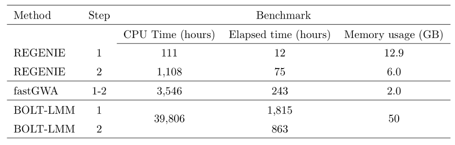
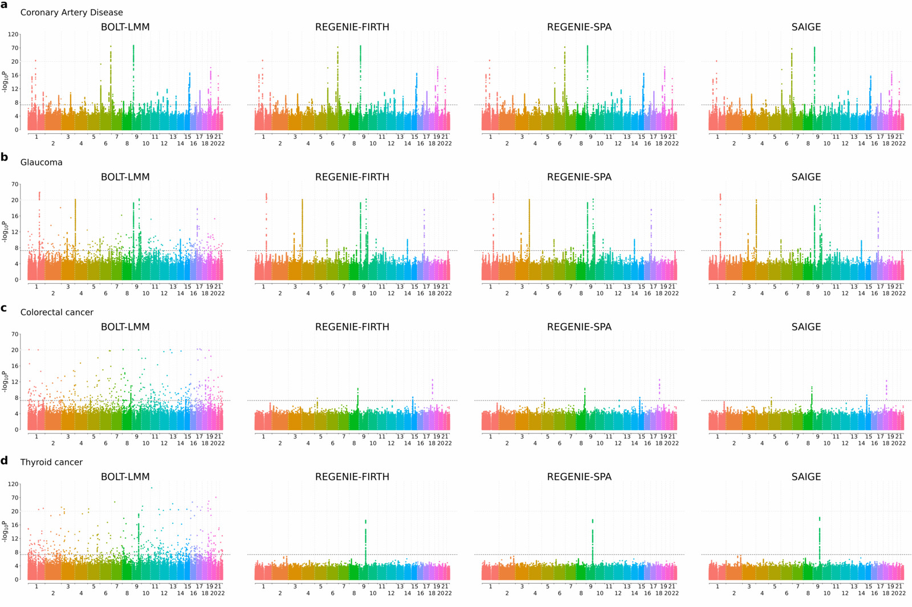
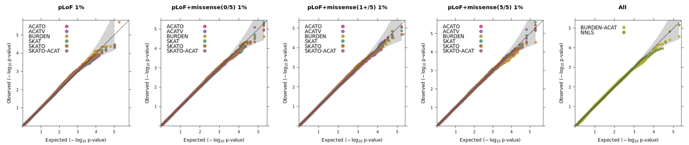
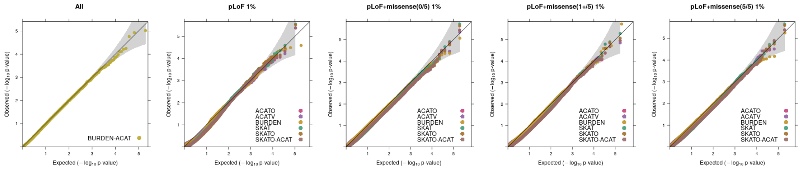

Performance
We assessed the performance of regenie against 3 other programs for GWAS on large cohorts.
- BOLT-LMM Loh et al. (2015) Nature Genetics 47, 284–290 [Software]
- SAIGE - Zhou et al. (2018) Nature Genetics 50, 1335–1341[Software]
- fastGWA - Jiang et al. (2019) Nature Genetics 51, 1749–1755 [Software]
Full details for all the runs are available in our paper.
Quantitative traits
We ran regenie, BOLT-LMM and fastGWA on 3 quantitative phenotypes measured on white British UK Biobank participants (LDL, N=389,189; Body mass index [BMI], N=407,609; and Bilirubin, N=388,303) where testing was performed on 9.8 million imputed SNPs.
The Manhattan plots for all three phenotypes (see below) show good agreement between the methods with both regenie and BOLT-LMM resulting in stronger association signals relative to fastGWA at known peaks of association (note that in the plots, the scaling of the y-axis changes above the upper dashed line).

We assessed the computational requirements of all three methods using a larger set of 50 quantitative traits from the UK Biobank, looking at computational timings as well as memory usage. For regenie and BOLT LMM, 469,336 LD-pruned SNPs were used as model SNPs when fitting the null model (step 1) and for fastGWA, these SNPs were used to compute the sparse GRM (timing not included). Tests were performed on 11.4M imputed SNPs (step 2).

From the table above, regenie was 151x faster than BOLT-LMM in elapsed time for Step 1 and 11.5x faster for Step 2, which translated into $>$30x overall speed-up in terms of elapsed time. In addition, regenie had a maximum memory usage of 12.9 GB, which is mostly due to regenie only reading a small portion of the genotype data at a time, whereas BOLT-LMM required 50GB. regenie was 2.8x faster than fastGWA, but fastGWA is very memory efficient and used only a maximum of 2GB.
Binary traits
regenie was compared to BOLT-LMM and SAIGE on a set of four binary traits measured on white British UK Biobank participants (coronary artery disease [CAD], N=352,063, case-control ratio=1:11; glaucoma, N=406,927, case-control ratio=1:52; colorectal cancer, N=407,746, case-control ratio=1:97; and thyroid cancer, N=407,746, case-control ratio=1:660) and Step 2 testing was performed on 11.6 million imputed SNPs. A novel and fast approximate Firth correction was used in regenie as well as a SPA correction.
As seen in the Manhattan plots below (note that the scaling of the y-axis changes above the upper dashed line), all four approaches show very good agreement for the most balanced trait (CAD; case-control ratio=1:11), but as the fraction of cases decreases BOLT-LMM tends to give inflated test statistics. However both regenie with Firth and SPA corrections, as well as SAIGE, which uses SPA correction, are all robust to this inflation and show similar agreement for the associations detected.

We assessed the computational requirements of regenie and SAIGE using a larger set of 50 binary traits from the UK Biobank that have a range of different case-control ratios and distinct missing data patterns. 469,336 LD-pruned SNPs were used as model SNPs when fitting the null model (step 1) and tests were performed on 11.4M imputed SNPs (step 2). In step 1, regenie was run using LOOCV and for two traits SAIGE did not finish as it took longer than the 4-week limit. In step 2, the approximate Firth correction was used in regenie in addition to SPA correction.

From the table above, Step 1 of regenie was about 350x faster and required only $40\%$ of the memory used by SAIGE. In Step 2, regenie Firth and SPA were 2x and 3x faster than SAIGE in CPU time, respectively, but were 21x and 34x faster than SAIGE in elapsed time, respectively, which suggests that regenie makes better use of parallelization in this step. Overall, regenie using Firth correction was 8x faster than SAIGE in CPU hours and 26.8x faster in elapsed time.
All runs above were done on the same computing environment (16 virtual CPU cores of a 2.1GHz AMD EPYC 7571 processor, 64GB of memory, and 600GB solid-state disk).
Timings improvements in v2.2
We have several changes in regenie v2.2 to improve the computational efficiency:
- The genotype file reading in Step 1 is now multi-threaded for all supported formats (i.e. BED, PGEN, and BGEN) and uses a faster file reading implementation for BGEN v1.2 format with 8-bit encoding. From our timings experiments below, these changes helped reduce the CPU time by 40-60% depending on the input format.

Note that we used a small number of SNPs for Step 1 in our experiments (20K) so the timing improvement will not be as high in a real Step 1 run where ~500K SNPs would be used.
- We have improved the implementation of the score tests for binary traits to reduce the number of matrix operations performed and this reduced the CPU timings by ~60% from the previous version 2.0.2.
 Note that there is an added memory cost of ~8NKP bytes [N=#samples; K=#covariates;P=#samples] so ~800MB extra for a UKB 500K run with 10 traits & 20 covariates.
Note that there is an added memory cost of ~8NKP bytes [N=#samples; K=#covariates;P=#samples] so ~800MB extra for a UKB 500K run with 10 traits & 20 covariates.
- We have also made use of the sparsity of the genotype vector for rarer variants in Step 2 (more so with binary traits) and this reduced the timing in our experiments by ~20% on average.

In our experiments, common variants are defined as having MAF > 5% and rare variants are defined as having MAF < 1% and no correction (i.e. Firth/SPA) is used.
- We have added new options
--write-null-firthand--use-null-firthto reduce the timing of Step 2 with approximate Firth when ran in parallel jobs split in smaller chunks within chromosomes. More specifically,--write-null-firthcan be used in Step 1 to fit the null model for approximate Firth test and store the resulting estimates to file. Then in Step 2, specifying--use-null-firthwill re-use these parameter estimates to reduce the timing of the approximate Firth null model fitting. We thank Juha Karjalainen for suggesting this feature.
Note: in our timings experiments, the PGEN genotype file only includes hard-calls. We ran a single trait in regenie and each setting was replicated 5 times.
Gene-based testing
regenie v3.0 adds in a wide range of gene-based tests. We have performed simulation experiments to assess the calibration of the tests with quantitative and binary traits using real genetic data from the UK Biobank where we randomly selected 100,000 samples obtained from the set of white British participants (see the "Methods" section of the Regenie paper for details on phenotype simulation where we set the heritability to 20%).
Using whole exome sequencing data, we constructed variant sets incorporating functional annotations (LoF and missense, where missense vairants were predicted as deleterious using a score based on 5 in-silico algorithms), as well as allele frequency thresholds focusing on rarer variation (1%, 0.1% and 0.01%). The SKAT/ACAT tests were applied only to variant sets using a 1% or 0.01% AAF threshold and SBAT and BURDEN-ACAT joint tests combined all burden mask signals from the 1%, 0.1%, 0.01% and singleton thresholds. 1000 genes on even chromosomes were randonly selected and tested for association (causal variants were on odd chromosomes). The QQ plots below show the distribution p-values for each test across the different annotation categories (ran in Regenie v3.2).
Quantitative traits
Using a 1% allele frequency cutoff for the SKAT/ACAT tests. 
Binary traits
We simulated highly imbalanced phenotypes with a disease prevalence of 1% (case-control ratio of 1:99) and applied Firth/SPA correction to the tests.
Using a 1% allele frequency cutoff for the SKAT/ACAT tests. 
Using a 0.01% allele frequency cutoff for the SKAT/ACAT tests.